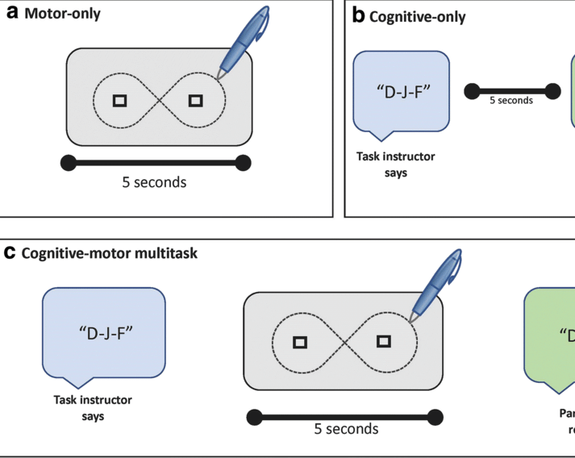
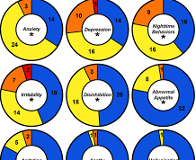

I am fascinated by how the brain intricately processes information. I studied this as a philosophy major at Swarthmore College, as a research assistant at Johns Hopkins University and as an MD/PhD student at McGovern Medical School.
During this time, I have been supported by the National Institutes of Health through a National Research Service Award and a Translational and Clinical Science Predoctoral Fellowship.
Ultimately, I plan to leverage computational neuroscience to better understand and treat psychiatric disorders.
-

- 
- 
-

I have created a website for my visuals of dynamical motifs! These provide a nice introduction to dynamical systems in the context of neuroscience. Also thank you to Dr. Paul Miller for giving me permission to animate his figures. https://t.co/HoR7wpwSjy pic.twitter.com/dh8z05Ocy3
— Mitchell B. Slapik (@mslapik) November 28, 2023
Communication subspaces enable the brain to selectively send different signals to different brain regions. Here, neuron 3 computes the sum of neurons 1 and 2, whereas neuron 4 computes their difference. In this way, neurons 3 and 4 can trace out completely independent patterns. pic.twitter.com/9iz9nsiEoS
— Mitchell B. Slapik (@mslapik) January 7, 2024
A 1995 Science paper showed that outfielders don't run in a straight line to catch a flyball. Instead, they run so that the ball appears to make a straight line in the sky. This simple strategy ensures that they end up in the right location without requiring any complex math. pic.twitter.com/1CkO8UXPbT
— Mitchell B. Slapik (@mslapik) July 16, 2024
The traditional model of working memory proposes 5 to 9 slots, but does not explain how these slots can interact. In 2015, Matthey et al. created a beautiful model of working memory that correctly reproduces the kinds of memory interference we see in real-life experiments. pic.twitter.com/GhPSCqRTAe
— Mitchell B. Slapik (@mslapik) July 19, 2024
According to the gating hypothesis, only relevant sensory information reaches PFC. In contrast, Mante et al. proposes that relevant and irrelevant information both arrive in PFC, but recurrent computations bring out the relevant information and map it to the appropriate response. pic.twitter.com/0Kdm565ICZ
— Mitchell B. Slapik (@mslapik) July 24, 2024
According to @StefanoFusi2, the brain uses high-dimensional representations to encode information. More dimensions allow for more possible decision boundaries, giving the brain flexibility for any potential task. pic.twitter.com/JC3HyS7Z7S
— Mitchell B. Slapik (@mslapik) September 9, 2023
Check out our live performance at the World-Famous @RandRStudioLive, available here: https://t.co/TdgeB09lTG pic.twitter.com/xTnfvkaqg2
— The Chirp Chirps (@TheChirpChirps) May 21, 2023
Thanks everyone for coming out to our reunion show last week at Valhalla! The Chirp Chirps are Back! pic.twitter.com/fLK5ZmCl9v
— The Chirp Chirps (@TheChirpChirps) November 17, 2023